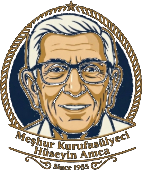

Her sabah taze pişer; biten tencere o gün bir daha kurulmaz.
Since 1955 · Ortakent, BodrumGünün yemekleri sabah pişer. Paket servis ve rezervasyon için de yazabilirsiniz.
WhatsApp'tan sorunYemekler öğlen saatlerinde en tazedir. Biten tencere o gün bir daha kurulmaz.